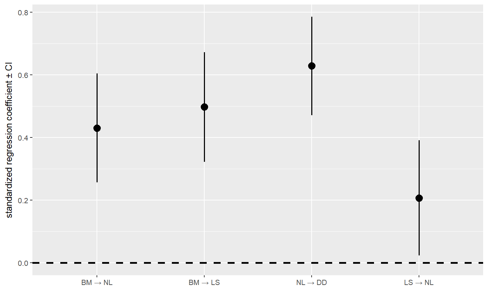

average_DAGs.RdPerform model averaging on a list of DAGs.
average_DAGs(fitted_DAGs, weights = rep(1, length(coef)), avg_method = "conditional", ...)
| fitted_DAGs | A list of |
|---|---|
| weights | A vector of associated model weights. |
| avg_method | Either |
| ... | Additional arguments passed to For details on the error calculations, see |
An object of class fitted_DAG, including standard errors and
confidence intervals.
# Normally, I would advocate the use of the phylo_path and average # functions, but this code shows how to average any set of models. Note # that not many checks are implemented, so you may want to be careful and # make sure the DAGs make sense and contain the same variables! candidates <- list(A = DAG(LS ~ BM, NL ~ BM, DD ~ NL), B = DAG(LS ~ BM, NL ~ LS, DD ~ NL)) fit_cand <- lapply(candidates, est_DAG, rhino, rhino_tree, model = 'lambda', method = 'logistic_MPLE') ave_cand <- average_DAGs(fit_cand) coef_plot(ave_cand)#> Warning: conversion failure on 'BM → NL' in 'mbcsToSbcs': dot substituted for <e2>#> Warning: conversion failure on 'BM → NL' in 'mbcsToSbcs': dot substituted for <86>#> Warning: conversion failure on 'BM → NL' in 'mbcsToSbcs': dot substituted for <92>#> Warning: conversion failure on 'BM → LS' in 'mbcsToSbcs': dot substituted for <e2>#> Warning: conversion failure on 'BM → LS' in 'mbcsToSbcs': dot substituted for <86>#> Warning: conversion failure on 'BM → LS' in 'mbcsToSbcs': dot substituted for <92>#> Warning: conversion failure on 'NL → DD' in 'mbcsToSbcs': dot substituted for <e2>#> Warning: conversion failure on 'NL → DD' in 'mbcsToSbcs': dot substituted for <86>#> Warning: conversion failure on 'NL → DD' in 'mbcsToSbcs': dot substituted for <92>#> Warning: conversion failure on 'LS → NL' in 'mbcsToSbcs': dot substituted for <e2>#> Warning: conversion failure on 'LS → NL' in 'mbcsToSbcs': dot substituted for <86>#> Warning: conversion failure on 'LS → NL' in 'mbcsToSbcs': dot substituted for <92>#> Warning: conversion failure on 'BM → NL' in 'mbcsToSbcs': dot substituted for <e2>#> Warning: conversion failure on 'BM → NL' in 'mbcsToSbcs': dot substituted for <86>#> Warning: conversion failure on 'BM → NL' in 'mbcsToSbcs': dot substituted for <92>#> Warning: conversion failure on 'BM → LS' in 'mbcsToSbcs': dot substituted for <e2>#> Warning: conversion failure on 'BM → LS' in 'mbcsToSbcs': dot substituted for <86>#> Warning: conversion failure on 'BM → LS' in 'mbcsToSbcs': dot substituted for <92>#> Warning: conversion failure on 'NL → DD' in 'mbcsToSbcs': dot substituted for <e2>#> Warning: conversion failure on 'NL → DD' in 'mbcsToSbcs': dot substituted for <86>#> Warning: conversion failure on 'NL → DD' in 'mbcsToSbcs': dot substituted for <92>#> Warning: conversion failure on 'LS → NL' in 'mbcsToSbcs': dot substituted for <e2>#> Warning: conversion failure on 'LS → NL' in 'mbcsToSbcs': dot substituted for <86>#> Warning: conversion failure on 'LS → NL' in 'mbcsToSbcs': dot substituted for <92>#> Warning: conversion failure on 'BM → NL' in 'mbcsToSbcs': dot substituted for <e2>#> Warning: conversion failure on 'BM → NL' in 'mbcsToSbcs': dot substituted for <86>#> Warning: conversion failure on 'BM → NL' in 'mbcsToSbcs': dot substituted for <92>#> Warning: conversion failure on 'BM → LS' in 'mbcsToSbcs': dot substituted for <e2>#> Warning: conversion failure on 'BM → LS' in 'mbcsToSbcs': dot substituted for <86>#> Warning: conversion failure on 'BM → LS' in 'mbcsToSbcs': dot substituted for <92>#> Warning: conversion failure on 'NL → DD' in 'mbcsToSbcs': dot substituted for <e2>#> Warning: conversion failure on 'NL → DD' in 'mbcsToSbcs': dot substituted for <86>#> Warning: conversion failure on 'NL → DD' in 'mbcsToSbcs': dot substituted for <92>#> Warning: conversion failure on 'LS → NL' in 'mbcsToSbcs': dot substituted for <e2>#> Warning: conversion failure on 'LS → NL' in 'mbcsToSbcs': dot substituted for <86>#> Warning: conversion failure on 'LS → NL' in 'mbcsToSbcs': dot substituted for <92>#> Warning: conversion failure on 'BM → NL' in 'mbcsToSbcs': dot substituted for <e2>#> Warning: conversion failure on 'BM → NL' in 'mbcsToSbcs': dot substituted for <86>#> Warning: conversion failure on 'BM → NL' in 'mbcsToSbcs': dot substituted for <92>#> Warning: conversion failure on 'BM → LS' in 'mbcsToSbcs': dot substituted for <e2>#> Warning: conversion failure on 'BM → LS' in 'mbcsToSbcs': dot substituted for <86>#> Warning: conversion failure on 'BM → LS' in 'mbcsToSbcs': dot substituted for <92>#> Warning: conversion failure on 'NL → DD' in 'mbcsToSbcs': dot substituted for <e2>#> Warning: conversion failure on 'NL → DD' in 'mbcsToSbcs': dot substituted for <86>#> Warning: conversion failure on 'NL → DD' in 'mbcsToSbcs': dot substituted for <92>#> Warning: conversion failure on 'LS → NL' in 'mbcsToSbcs': dot substituted for <e2>#> Warning: conversion failure on 'LS → NL' in 'mbcsToSbcs': dot substituted for <86>#> Warning: conversion failure on 'LS → NL' in 'mbcsToSbcs': dot substituted for <92>#> Warning: conversion failure on 'BM → NL' in 'mbcsToSbcs': dot substituted for <e2>#> Warning: conversion failure on 'BM → NL' in 'mbcsToSbcs': dot substituted for <86>#> Warning: conversion failure on 'BM → NL' in 'mbcsToSbcs': dot substituted for <92>#> Warning: conversion failure on 'BM → LS' in 'mbcsToSbcs': dot substituted for <e2>#> Warning: conversion failure on 'BM → LS' in 'mbcsToSbcs': dot substituted for <86>#> Warning: conversion failure on 'BM → LS' in 'mbcsToSbcs': dot substituted for <92>#> Warning: conversion failure on 'NL → DD' in 'mbcsToSbcs': dot substituted for <e2>#> Warning: conversion failure on 'NL → DD' in 'mbcsToSbcs': dot substituted for <86>#> Warning: conversion failure on 'NL → DD' in 'mbcsToSbcs': dot substituted for <92>#> Warning: conversion failure on 'LS → NL' in 'mbcsToSbcs': dot substituted for <e2>#> Warning: conversion failure on 'LS → NL' in 'mbcsToSbcs': dot substituted for <86>#> Warning: conversion failure on 'LS → NL' in 'mbcsToSbcs': dot substituted for <92>#> Warning: conversion failure on 'BM → NL' in 'mbcsToSbcs': dot substituted for <e2>#> Warning: conversion failure on 'BM → NL' in 'mbcsToSbcs': dot substituted for <86>#> Warning: conversion failure on 'BM → NL' in 'mbcsToSbcs': dot substituted for <92>#> Warning: conversion failure on 'BM → LS' in 'mbcsToSbcs': dot substituted for <e2>#> Warning: conversion failure on 'BM → LS' in 'mbcsToSbcs': dot substituted for <86>#> Warning: conversion failure on 'BM → LS' in 'mbcsToSbcs': dot substituted for <92>#> Warning: conversion failure on 'NL → DD' in 'mbcsToSbcs': dot substituted for <e2>#> Warning: conversion failure on 'NL → DD' in 'mbcsToSbcs': dot substituted for <86>#> Warning: conversion failure on 'NL → DD' in 'mbcsToSbcs': dot substituted for <92>#> Warning: conversion failure on 'LS → NL' in 'mbcsToSbcs': dot substituted for <e2>#> Warning: conversion failure on 'LS → NL' in 'mbcsToSbcs': dot substituted for <86>#> Warning: conversion failure on 'LS → NL' in 'mbcsToSbcs': dot substituted for <92>#> Warning: conversion failure on 'BM → NL' in 'mbcsToSbcs': dot substituted for <e2>#> Warning: conversion failure on 'BM → NL' in 'mbcsToSbcs': dot substituted for <86>#> Warning: conversion failure on 'BM → NL' in 'mbcsToSbcs': dot substituted for <92>#> Warning: conversion failure on 'BM → LS' in 'mbcsToSbcs': dot substituted for <e2>#> Warning: conversion failure on 'BM → LS' in 'mbcsToSbcs': dot substituted for <86>#> Warning: conversion failure on 'BM → LS' in 'mbcsToSbcs': dot substituted for <92>#> Warning: conversion failure on 'NL → DD' in 'mbcsToSbcs': dot substituted for <e2>#> Warning: conversion failure on 'NL → DD' in 'mbcsToSbcs': dot substituted for <86>#> Warning: conversion failure on 'NL → DD' in 'mbcsToSbcs': dot substituted for <92>#> Warning: conversion failure on 'LS → NL' in 'mbcsToSbcs': dot substituted for <e2>#> Warning: conversion failure on 'LS → NL' in 'mbcsToSbcs': dot substituted for <86>#> Warning: conversion failure on 'LS → NL' in 'mbcsToSbcs': dot substituted for <92>#> Warning: conversion failure on 'BM → NL' in 'mbcsToSbcs': dot substituted for <e2>#> Warning: conversion failure on 'BM → NL' in 'mbcsToSbcs': dot substituted for <86>#> Warning: conversion failure on 'BM → NL' in 'mbcsToSbcs': dot substituted for <92>#> Warning: conversion failure on 'BM → LS' in 'mbcsToSbcs': dot substituted for <e2>#> Warning: conversion failure on 'BM → LS' in 'mbcsToSbcs': dot substituted for <86>#> Warning: conversion failure on 'BM → LS' in 'mbcsToSbcs': dot substituted for <92>#> Warning: conversion failure on 'NL → DD' in 'mbcsToSbcs': dot substituted for <e2>#> Warning: conversion failure on 'NL → DD' in 'mbcsToSbcs': dot substituted for <86>#> Warning: conversion failure on 'NL → DD' in 'mbcsToSbcs': dot substituted for <92>#> Warning: conversion failure on 'LS → NL' in 'mbcsToSbcs': dot substituted for <e2>#> Warning: conversion failure on 'LS → NL' in 'mbcsToSbcs': dot substituted for <86>#> Warning: conversion failure on 'LS → NL' in 'mbcsToSbcs': dot substituted for <92>#> Warning: conversion failure on 'BM → NL' in 'mbcsToSbcs': dot substituted for <e2>#> Warning: conversion failure on 'BM → NL' in 'mbcsToSbcs': dot substituted for <86>#> Warning: conversion failure on 'BM → NL' in 'mbcsToSbcs': dot substituted for <92>#> Warning: conversion failure on 'BM → LS' in 'mbcsToSbcs': dot substituted for <e2>#> Warning: conversion failure on 'BM → LS' in 'mbcsToSbcs': dot substituted for <86>#> Warning: conversion failure on 'BM → LS' in 'mbcsToSbcs': dot substituted for <92>#> Warning: conversion failure on 'NL → DD' in 'mbcsToSbcs': dot substituted for <e2>#> Warning: conversion failure on 'NL → DD' in 'mbcsToSbcs': dot substituted for <86>#> Warning: conversion failure on 'NL → DD' in 'mbcsToSbcs': dot substituted for <92>#> Warning: conversion failure on 'LS → NL' in 'mbcsToSbcs': dot substituted for <e2>#> Warning: conversion failure on 'LS → NL' in 'mbcsToSbcs': dot substituted for <86>#> Warning: conversion failure on 'LS → NL' in 'mbcsToSbcs': dot substituted for <92>#> Warning: conversion failure on 'BM → NL' in 'mbcsToSbcs': dot substituted for <e2>#> Warning: conversion failure on 'BM → NL' in 'mbcsToSbcs': dot substituted for <86>#> Warning: conversion failure on 'BM → NL' in 'mbcsToSbcs': dot substituted for <92>#> Warning: conversion failure on 'BM → LS' in 'mbcsToSbcs': dot substituted for <e2>#> Warning: conversion failure on 'BM → LS' in 'mbcsToSbcs': dot substituted for <86>#> Warning: conversion failure on 'BM → LS' in 'mbcsToSbcs': dot substituted for <92>#> Warning: conversion failure on 'NL → DD' in 'mbcsToSbcs': dot substituted for <e2>#> Warning: conversion failure on 'NL → DD' in 'mbcsToSbcs': dot substituted for <86>#> Warning: conversion failure on 'NL → DD' in 'mbcsToSbcs': dot substituted for <92>#> Warning: conversion failure on 'LS → NL' in 'mbcsToSbcs': dot substituted for <e2>#> Warning: conversion failure on 'LS → NL' in 'mbcsToSbcs': dot substituted for <86>#> Warning: conversion failure on 'LS → NL' in 'mbcsToSbcs': dot substituted for <92>#> Warning: conversion failure on 'BM → NL' in 'mbcsToSbcs': dot substituted for <e2>#> Warning: conversion failure on 'BM → NL' in 'mbcsToSbcs': dot substituted for <86>#> Warning: conversion failure on 'BM → NL' in 'mbcsToSbcs': dot substituted for <92>#> Warning: conversion failure on 'BM → LS' in 'mbcsToSbcs': dot substituted for <e2>#> Warning: conversion failure on 'BM → LS' in 'mbcsToSbcs': dot substituted for <86>#> Warning: conversion failure on 'BM → LS' in 'mbcsToSbcs': dot substituted for <92>#> Warning: conversion failure on 'NL → DD' in 'mbcsToSbcs': dot substituted for <e2>#> Warning: conversion failure on 'NL → DD' in 'mbcsToSbcs': dot substituted for <86>#> Warning: conversion failure on 'NL → DD' in 'mbcsToSbcs': dot substituted for <92>#> Warning: conversion failure on 'LS → NL' in 'mbcsToSbcs': dot substituted for <e2>#> Warning: conversion failure on 'LS → NL' in 'mbcsToSbcs': dot substituted for <86>#> Warning: conversion failure on 'LS → NL' in 'mbcsToSbcs': dot substituted for <92>#> Warning: conversion failure on 'BM → NL' in 'mbcsToSbcs': dot substituted for <e2>#> Warning: conversion failure on 'BM → NL' in 'mbcsToSbcs': dot substituted for <86>#> Warning: conversion failure on 'BM → NL' in 'mbcsToSbcs': dot substituted for <92>#> Warning: conversion failure on 'BM → LS' in 'mbcsToSbcs': dot substituted for <e2>#> Warning: conversion failure on 'BM → LS' in 'mbcsToSbcs': dot substituted for <86>#> Warning: conversion failure on 'BM → LS' in 'mbcsToSbcs': dot substituted for <92>#> Warning: conversion failure on 'NL → DD' in 'mbcsToSbcs': dot substituted for <e2>#> Warning: conversion failure on 'NL → DD' in 'mbcsToSbcs': dot substituted for <86>#> Warning: conversion failure on 'NL → DD' in 'mbcsToSbcs': dot substituted for <92>#> Warning: conversion failure on 'LS → NL' in 'mbcsToSbcs': dot substituted for <e2>#> Warning: conversion failure on 'LS → NL' in 'mbcsToSbcs': dot substituted for <86>#> Warning: conversion failure on 'LS → NL' in 'mbcsToSbcs': dot substituted for <92>#> Warning: conversion failure on 'BM → NL' in 'mbcsToSbcs': dot substituted for <e2>#> Warning: conversion failure on 'BM → NL' in 'mbcsToSbcs': dot substituted for <86>#> Warning: conversion failure on 'BM → NL' in 'mbcsToSbcs': dot substituted for <92>#> Warning: conversion failure on 'BM → LS' in 'mbcsToSbcs': dot substituted for <e2>#> Warning: conversion failure on 'BM → LS' in 'mbcsToSbcs': dot substituted for <86>#> Warning: conversion failure on 'BM → LS' in 'mbcsToSbcs': dot substituted for <92>#> Warning: conversion failure on 'NL → DD' in 'mbcsToSbcs': dot substituted for <e2>#> Warning: conversion failure on 'NL → DD' in 'mbcsToSbcs': dot substituted for <86>#> Warning: conversion failure on 'NL → DD' in 'mbcsToSbcs': dot substituted for <92>#> Warning: conversion failure on 'LS → NL' in 'mbcsToSbcs': dot substituted for <e2>#> Warning: conversion failure on 'LS → NL' in 'mbcsToSbcs': dot substituted for <86>#> Warning: conversion failure on 'LS → NL' in 'mbcsToSbcs': dot substituted for <92>#> Warning: conversion failure on 'BM → NL' in 'mbcsToSbcs': dot substituted for <e2>#> Warning: conversion failure on 'BM → NL' in 'mbcsToSbcs': dot substituted for <86>#> Warning: conversion failure on 'BM → NL' in 'mbcsToSbcs': dot substituted for <92>#> Warning: conversion failure on 'BM → LS' in 'mbcsToSbcs': dot substituted for <e2>#> Warning: conversion failure on 'BM → LS' in 'mbcsToSbcs': dot substituted for <86>#> Warning: conversion failure on 'BM → LS' in 'mbcsToSbcs': dot substituted for <92>#> Warning: conversion failure on 'NL → DD' in 'mbcsToSbcs': dot substituted for <e2>#> Warning: conversion failure on 'NL → DD' in 'mbcsToSbcs': dot substituted for <86>#> Warning: conversion failure on 'NL → DD' in 'mbcsToSbcs': dot substituted for <92>#> Warning: conversion failure on 'LS → NL' in 'mbcsToSbcs': dot substituted for <e2>#> Warning: conversion failure on 'LS → NL' in 'mbcsToSbcs': dot substituted for <86>#> Warning: conversion failure on 'LS → NL' in 'mbcsToSbcs': dot substituted for <92>